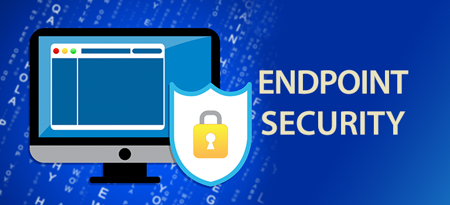

Endpoint Security
Endpoint Security, protection of devices like laptops, phones, tablets, and desktops from cyber threats. Endpoints are often the most vulnerable entry points for attackers/hackers attempting to get information from users. With the rise of "working from home" jobs, endpoint security is critical in the prevention of breaches and malware infections.
How it Works
Endpoint security uses software that monitors, detects, and responds automatically to threats on devices. Common tools include antivirus programs, firewalls, and endpoint detection and response (EDR) systems. These work by scanning system files, network activity, and system process to block unusual activity and are often integrated with more centralised management systems for more enterprise-level monitoring. An example of endpoint security in action is if a laptop gets an email with a malicious attachment, it will automatically detect it and isolate it from the other emails.
Key Benefits
- Protects devices from malware, ransomware, and malicious software in general
- Reduces the risk of data breaches by securing main access points
- Helps enforce security policies across a wide range of devices in an organisation
- Enables faster detection and response to cyber breaches